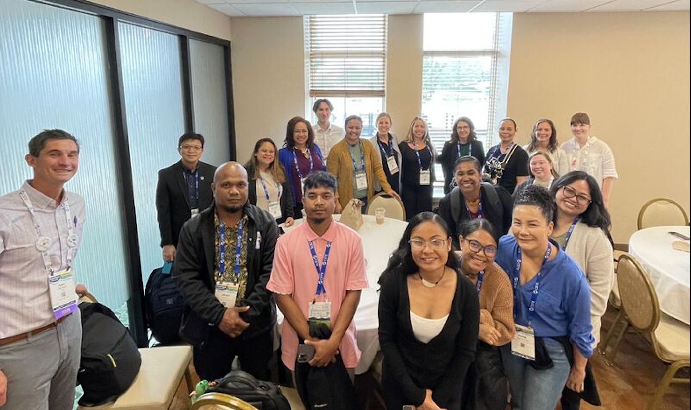

Jake Harmon
Cover Letter for Kahuina Consulting - Public Health Associate Position
Aloha, Kahuina
The Journey
My journey into public health started as an EMT. When our fire department launched a Community Paramedicine program (designed to divert frequent, non-emergency callers from costly hospital trips) a colleague with her new MPH asked me to help evaluate it. While my sociology background was the initial hook, what really captured me was the data underneath. That experience showed me the power of systems thinking in public health, and it pushed me back to school to study epidemiology.
The past two years have been a tremendous learning experience. I’ve had the chance to work alongside a scintillating mosaic of public health stakeholders on high impact projects:
Stakeholder Collaboration
- CDC NCIRD — Survey collaboration and data dissemination with state and local health departments through CSTE partnership
- CDC CNEIZD — Reviewing conditions for clean, regular data flows on enteric disease
- Georgia Department of Public Health — Case interviewing (English/Spanish), disease surveillance via SENDSS
- Georgia Environmental Protection Division — Multi-year air pollution trend analysis with university partners
- Georgia Emerging Infections Program — Automating data cleaning for lab results on notifiable diseases with DPH
- DeKalb County Fire Rescue — EMT response, community paramedicine program, opioid call support
- Council of State and Territorial Epidemiologists — Workforce development, data modernization research, cost-effectiveness of federal dollars
- Community Health Aligning Revitalization Resilience & Sustainability — Environmental health initiatives in West Atlanta
- Emory Oaks — Autism support programming at Emory University
- Southern Alliance for Public Health Leadership — VFC provider mapping and childhood immunization access analysis
- Emory University — Data sharing agreement with CHARRS to support air pollution research in West Atlanta
- University of Georgia — Data sharing agreement with CHARRS for cross-institutional air pollution analysis
- Johns Hopkins University — Facilitated the “R for Trend Analysis” workshop at CSTE’s 2025 Annual Conference
One of my most meaningful partnerships was evaluating the epidemiology workforce across the Pacific Territories and Freely Associated States. I spent a month conducting late-night focus groups with Public Health representatives from the Pacific to learn how CSTE could better support their activities, so when I got to meet some of them in person at our 2025 Conference, it felt like seeing old friends.

The Work
As a data-oriented person, I harness digital technologies to facilitate communication, learning, and teamwork. I’ve selected a few public-facing projects. Across the variety of topics and tools, the through-line is the same: comprehensible, reproducible data flows - a commitment I see as equally owed to the scientific method, to partners, and to the public.
Why Kahuina
Early in my time at CSTE, I sat in on calls where the Kahuina team was presenting their work on a LEARN course to my manager. My internship had just started, so I was mostly listening, trying to understand what good looked like in this field. The way the consultants shared their work and their thought process was instructive for me, as I would soon begin work on a similar course about data privacy.
Having learned more about the company since, I love the pace and variety of Kahuina’s portfolio — pressing public health challenges across different partners and sectors. I understand the future of epidemiology and informatics to be converging, and I’m genuinely excited about emerging technologies such as syndromic surveillance and wastewater surveillance — and to help forge that horizon alongside Kahuina.
Why Jake Harmon
But beyond the work itself, what matters is how you do it. I’ve learned that collaboration is essential, and that trust relies on setting aside one-size-fits-all solutions. At CSTE, I composed parameterized reports housed in a GitHub repository because the partners needed version control and remote access. At DPH, I produced the same sort of reports as local, desktop-runnable files because we needed off-line, easily workable solutions. Same skill set, different execution. That’s what I bring: the attentiveness to understand what a partner actually needs, and the flexibility to deliver it right. Ultimately, methodical questioning and an attentive ear matter just as much as cutting-edge tech when shaping systems that deliver the public the safety and wellbeing they deserve.
Aloha,
Jake
Jake Harmon · Atlanta, GA